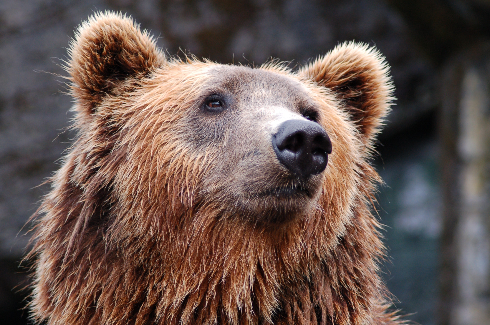
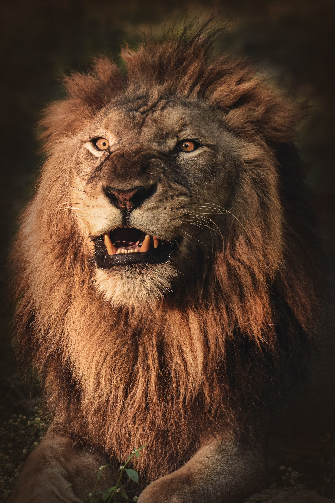
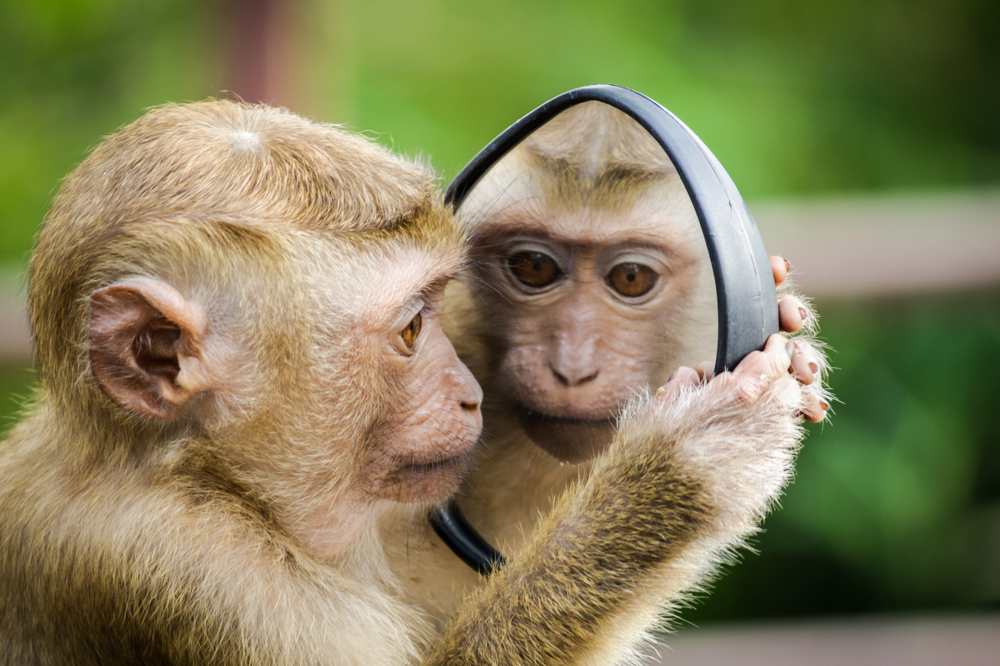
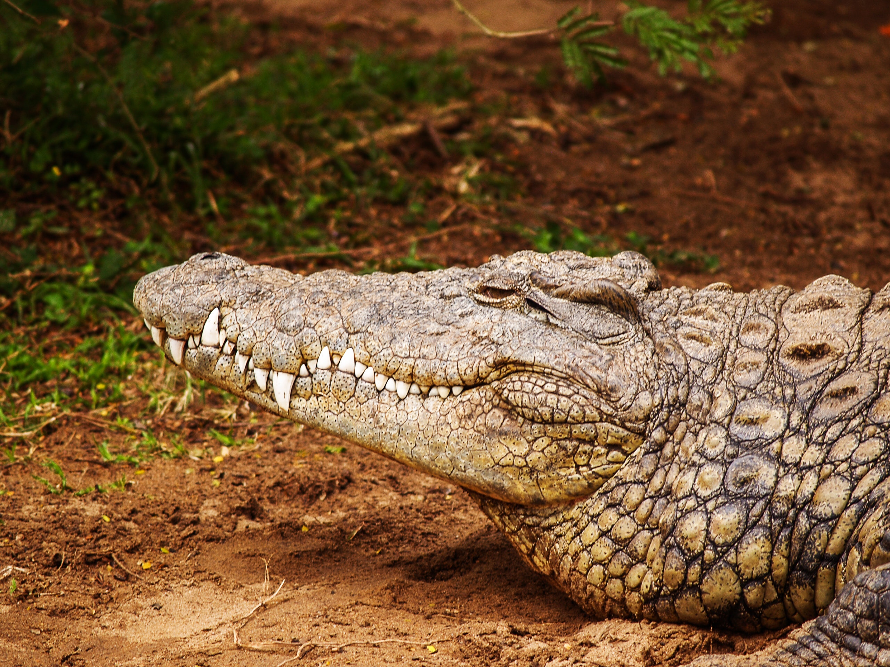

Bears

Bears are carnivoran mammals of the family Ursidae. They are classified as caniforms, or doglike carnivorans. Although only eight species of bears are extant, they are widespread, appearing in a wide variety of habitats throughout most of the Northern Hemisphere and partially in the Southern Hemisphere. Learn more.
Giraffes
 The giraffe is a large African hoofed mammal belonging to the genus Giraffa. It is the tallest living terrestrial animal and the largest ruminant on Earth. Traditionally, giraffes were thought to be one species, Giraffa camelopardalis, with nine subspecies. Learn more.
The giraffe is a large African hoofed mammal belonging to the genus Giraffa. It is the tallest living terrestrial animal and the largest ruminant on Earth. Traditionally, giraffes were thought to be one species, Giraffa camelopardalis, with nine subspecies. Learn more.
Lions

The lion is a large cat of the genus Panthera native to Africa and India. It has a muscular, broad-chested body; short, rounded head; round ears; and a hairy tuft at the end of its tail. It is sexually dimorphic; adult male lions are larger than females and have a prominent mane. Learn more.
Monkeys

- Cookie
- Earl
- Banana Pudding
Monkey is a common name that may refer to most mammals of the infraorder Simiiformes, also known as the simians. Learn more.
Alligators

An alligator, or colloquially gator, is a large reptile in the Crocodilia order in the genus Alligator of the family Alligatoridae. The two extant species are the American alligator and the Chinese alligator. Additionally, several extinct species of alligator are known from fossil remains. Learn more.